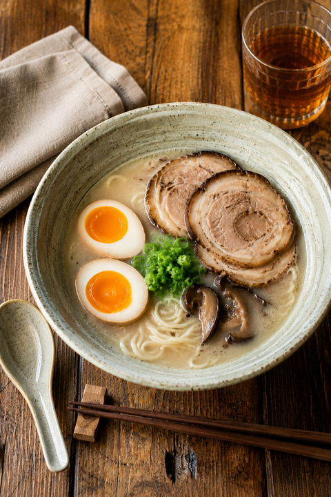

Tonkotsu Pork Ramen

Home
Description
This is a simple recipe for Japanese tonkotsu ramen, which is comprised of various vegetables, herbs, eggs, and pork served alongside noodles.
The proportions and measurements used here are meant to serve 2 people, but feel free to adjust the recipe to best fit your needs!
(Culinary Reference: Tad = 1/4 tsp. Dash = 1/8 tsp. Pinch = 1/16 tsp.)
Ingredients
Meats, Vegetables, & Eggs
- 2 servings of ramen noodles
- 1.75 lbs of pork leg bones
- 0.65 lbs of pork hock
- Half a piece of dried kelp
- Half cup of bonito flakes
- 1 dried shiitake mushrooms
- 1 chopped green onion
- 2 eggs
Herbs, Sauces, and Oils
- Half a head of garlic
- Half a knob of ginger
- 1 tbsp of sake
- 1 tbsp of mirin
- 2 tbsp of soy sauce
- 1.5 tbsp of kosher salt
- 1 tbsp of rice vinegar